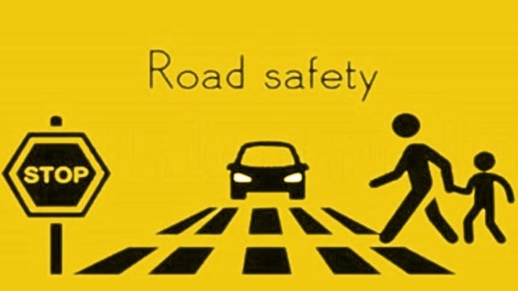

In today's world road and transport has become an integral partof every human being. Every body is a road user in one shape or the other. The present transport system has minimized the distances but it has on the other hand increased the life risk. Every year road crashes result in loss of lakhs of lives and serious injuries to crores of people.  In India itself about eighty thousand people are killed in road crashes every year which is thirteen percent of the total fatality all over the world. Man behind the wheel plays an important role in most of the crashes. In most of the cases crashes occurs either due to carelessness or due to lack of road safety awarenessof the road user. Hence, road safety education is as essential as any other basic skills of survival. The Government of India is deeply concerned about the growth in the number of road accidents, injuries and fatalities in recent years. It recognizes that road accidents have now become a major public health issue, and the victims are mainly the poor and vulnerable road users. The Government of India further recognizes that as road accidents involve roads, motor vehicles as also the human beings, road safety needs to be addressed on a holistic basis. It also recognizes that regardless of jurisdictions, the Central and State Governments have a joint responsibility in reducing the incidence of road accidents, injuries and fatalities. In the light of this, the Government of India, through this National Road Safety Policy, states its commitment to bring about a significant reduction in mortality and morbidity resulting from road accidents.
In order to achieve a significant improvement in road safety, the Government of India is committed to:
The Government is increasing its efforts to promote awareness about the various aspects of road safety, the social and economic implications of road accidents and what needs to be done to curb the rising menace of road accidents. This would enable and empower the different stakeholders to play a meaningful role in promoting road safety.
The Government is taking measures to review standards pertaining to safety in the design of rural and urban roads and bring them in consonance with international best practices keeping in view Indian traffic conditions. Continuing application of Intelligent Transport Systems (ITS) under a national framework to establish a safe and efficient transport system will be encouraged.
Road safety knowledge and awareness is now being created amongst the population through education, training and publicity campaigns. Road safety education will also focus on school children and college going students, while road safety publicity campaigns will be used to propagate good road safety practices among the community. The Government will encourage all professionals associated with road design, road construction, road network management, traffic management and law enforcement to attain adequate knowledge of road safety issues.
The Government is encouraging increased activity in programmes of road safety research by identifying priority areas, funding research in those areas adequately and establishing centers of excellence in research and academic institutions. The Government is also facilitate dissemination of the result of research and identified examples of good practices through publication, training, conferences, workshops and websites. Many other Private organisations, NGOs are also woking for spreading the awareness among the masses related to road safety. Schools and Colleges are also including the Road Safety lessons in their education system and conducting various awareness programmes. Strengthening, Enabling Legal, Institutional and Financial Environment for Road Safety The Government is taking appropriate measures to ensure that the required legal, institutional and financial environment for road safety is further strengthened and a mechanism for effective coordination of various stakeholders is put in place. The reforms in these areas would provide for the active and extensive participation of the community at large, of the private sector, academia and NGOs.
The design and construction of all road facilities (rural and urban) is being taken into account the needs of non-motorized transport and the vulnerable and physically challenged in an appropriate manner. The Government will seek to disseminate ‘best practices’ in this regard to town planners, architects, and highway and traffic engineers.
National framework to establish a safe and efficient transport system will be encouraged.
The Government is taking appropriate measures to assist various state and other governments to strengthen and improve the quality of enforcement in order to ensure effective and uniform implementation of safety laws. The Government will actively encourage the establishment and strengthening of highway Patrolling on National and State Highways in cooperation with State Governments and Union Territories as appropriate.
The Government has decided to establish a dedicated agency viz. a National Road Safety Board to oversee the issues related to road safety and evolve effective strategies for implementation of the Road Safety Policy. The Government has also decided to establish a National Road Safety Fund to finance road activities through the allocation of a certain percentage of the cess on gasoline and diesel.